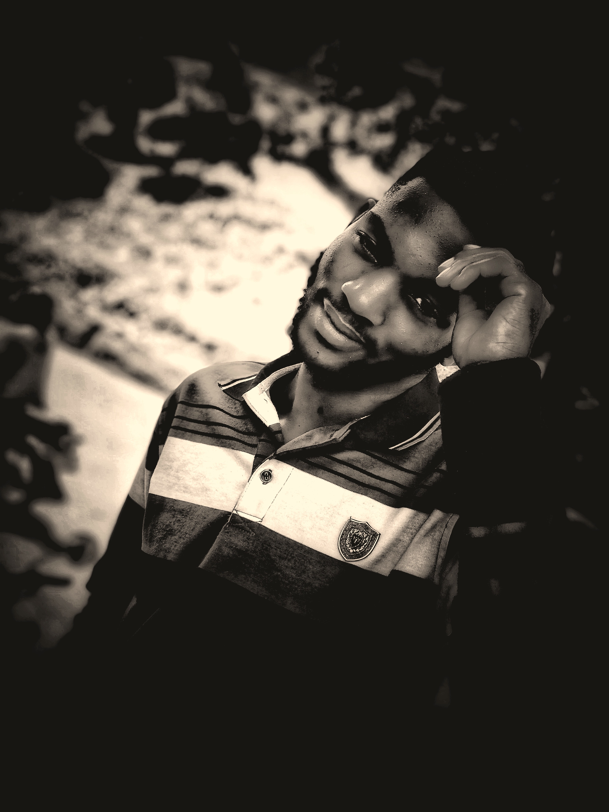
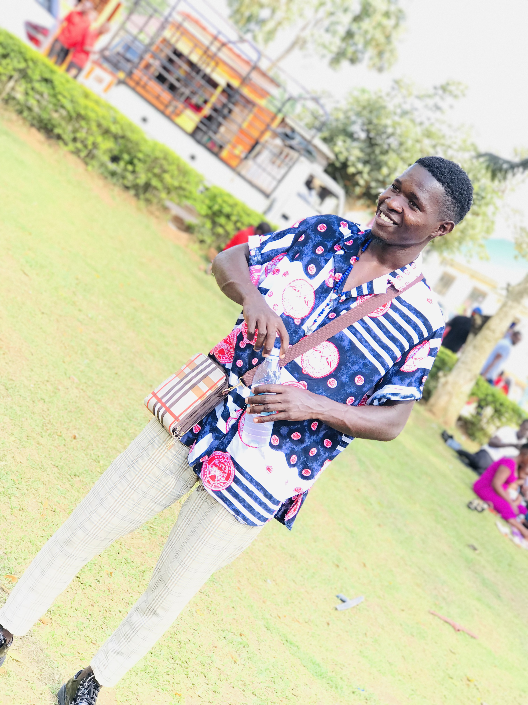
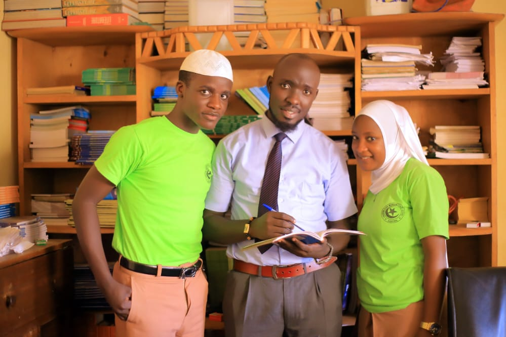
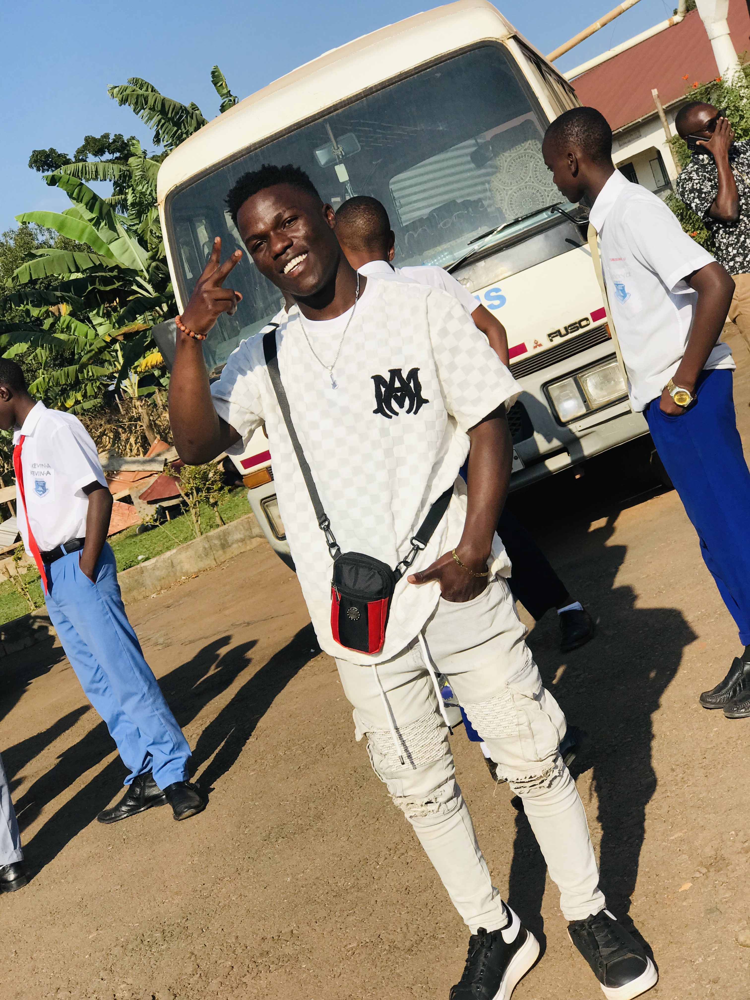

FOOTBALL
My passion for the game of football went undiscovered until my senior year. I’ve played football for as long as I can remember. From playing flag football in third and fourth grade all the way up to my senior year of highschool, it has always been a part of my life. I always found myself doing something football-related, whether it be playing it with friends, watching it on TV, or playing it on the PlayStation. To me, football is a way of bonding with friends and family. This sport brings you closer as a team, and it’s a way of making memories and friendships that will last a lifetime. Freshman year of football was an eye-opener for me, and the rest of the team. It was our first year in highschool and all the big changes distracted a lot of us. Us, as players, learned new plays and new techniques that we would use all throughout our years at West Delaware. I remember feeling swamped in all the new information that was thrown my way.
PHOTOGRAPHY
Photography is my passion because I use it to express myself. People find different ways to share their emotions and thoughts with the world. Some express themselves as dancers, while others as writers. Photographers use images to show people how they see everything around them.
Photography offers us so much than we realize on a surface level. It gives us the ability to create emotion, stories, and experiences. With a camera, you can inspire people, make them laugh, cry, smile, and yearn. Now, I base so much of my life off of photographs.   
FOOTBALL
To me, football is a way of bonding with friends and family. This sport brings you closer as a team, and it's a way of making memories and friendships that will last a lifetime.
Dozens of people from both teams only pay attention to one ball to know how to win the ball for their team. So the combat of this sport is very high, when watching, everyone will focus on the team every moment. Football is also the leading sport in betting activities. 